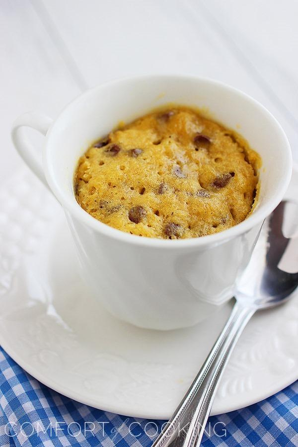

Chocolate Chip Cookie in a Mug

Source
Description
You deserve a cookie! All you need for this warm, gooey chocolate chip cookie are a handful of pantry staples, a microwave and 1 minute. What are you waiting for?
It’s mid-week and you deserve a cookie. A warm, soft chocolate chip cookie that takes seconds to make and doesn’t involve perfect scooping or lots of messy cleanup. Just a handful of basic ingredients, a mug, and a spoon for diggin’ in.
Ingredients
- 1 Tablespoon unsalted butter
- 1 Tablespoon granulated sugar
- 1 Tablespoon brown sugar, firmly packed
- 1/2 teaspoon vanilla extract
- 1/8 teaspoon pinch salt
- 1 egg yolk
- 3 Tablespoons all-purpose flour
- 1-2 Tablespoons chocolate chips
Steps
- Microwave butter in a mug until melted, 30 seconds to 1 minute. With a spoon, mix in sugars, vanilla extract and salt until well-combined. Mix in egg yolk until no traces of the yolk are seen. Mix in flour. Fold in chocolate chips.
- Microwave on high for 40 seconds, or a maximum of 50 seconds. Serve warm (maybe even with a dollop of ice cream).
- Enjoy!